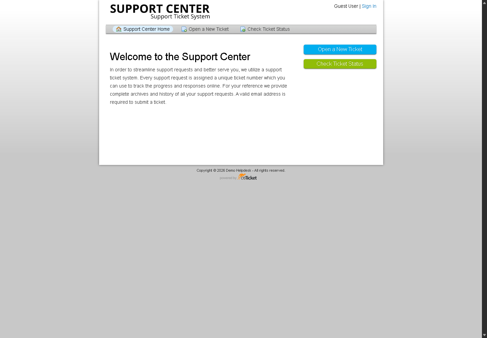
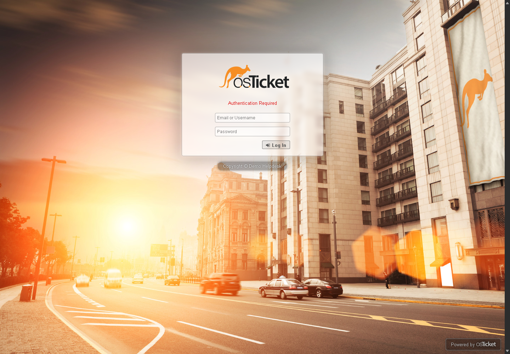
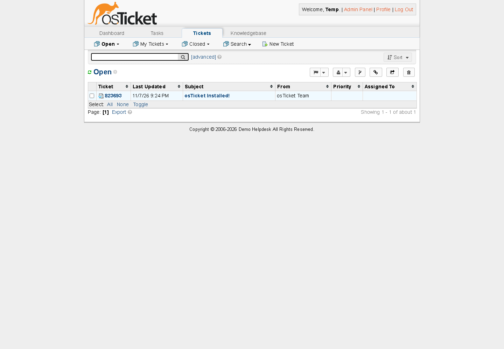
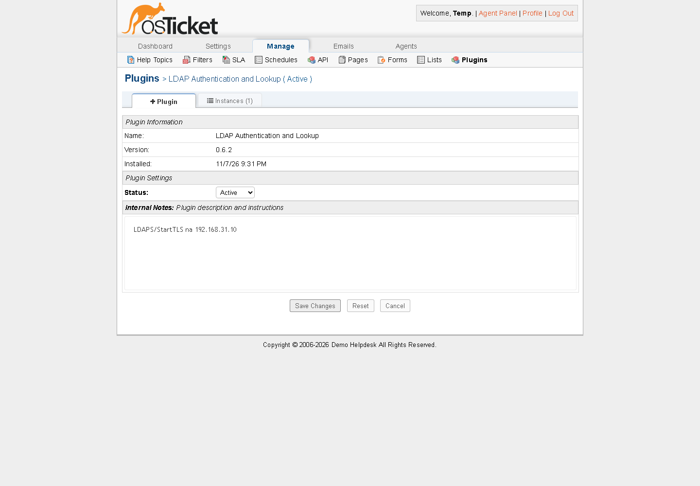
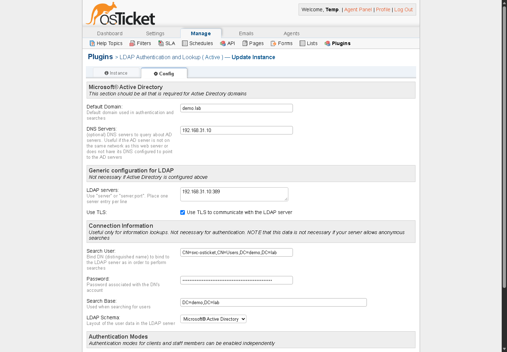
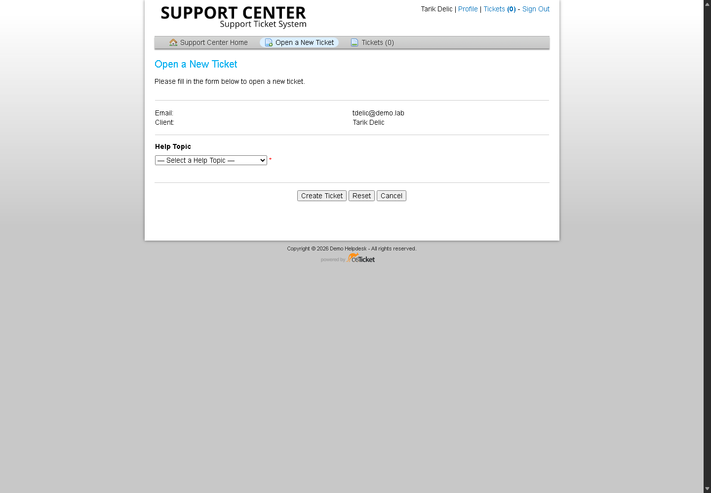

Povezati Ubuntu Server na postojeći Windows Active Directory domen demo.lab, a zatim na Ubuntu podići osTicket tiketing sistem sa LDAP integracijom, tako da se korisnici prijavljuju svojim standardnim Windows domenskim nalozima.
Ukratko: jedan Windows svet (domen) i jedan Linux svet (aplikacija) — povezani tako da korisnik ima jedan nalog za sve.
| Uloga | Mašina | IP adresa | Napomena |
|---|---|---|---|
| Ruter / gateway | kućna mreža | 192.168.31.1 | izlaz u internet |
| Host | Windows (VMware Workstation) | 192.168.31.107 | fizička mreža, wired |
| Domenski kontroler + DNS | Windows Server | 192.168.31.10 | domen demo.lab, bridged |
| Aplikativni server | Ubuntu Server | 192.168.31.20 | osTicket, bridged |
Mrežni režim: obe virtuelne mašine su na Bridged (VMnet0). Time su ravnopravni članovi iste fizičke mreže i vide se u oba smera.
| Postavka | Windows Server | Ubuntu Server |
|---|---|---|
| IP adresa | 192.168.31.10/24 | 192.168.31.20/24 |
| Gateway | 192.168.31.1 | 192.168.31.1 |
| DNS | 127.0.0.1 + forwarder 192.168.31.1 | 192.168.31.10 |
| Search domen | demo.lab | demo.lab |
| # | Uslov | Zašto |
|---|---|---|
| 1 | Stalan identitet (fiksna IP + ime) | DNS zapisi, Kerberos i linkovi ne trpe promenu adrese |
| 2 | DNS pokazuje na DC | samo DC zna demo.lab i SRV zapise domena |
| 3 | Tačno vreme | Kerberos odbija sat koji odstupa više od 5 minuta |
/24 = 254 domaćina).Cilj: Windows Server mora biti vidljiv u pravoj mreži, imati ispravan gateway i prosleđivati DNS upite u internet.
IP: 192.168.31.10
Maska: 255.255.255.0
Gateway: 192.168.31.1
DNS: 127.0.0.1 (server je sam sebi DNS)# prosleđivanje upita za spoljna imena ka ruteru
Set-DnsServerForwarder -IPAddress 192.168.31.1
# A + PTR zapis za Ubuntu (ime -> IP i IP -> ime)
Add-DnsServerResourceRecordA -Name "ubuntu" -ZoneName "demo.lab" -IPv4Address 192.168.31.20 -CreatePtr
# dozvoli ping (ICMP) ka serveru
New-NetFirewallRule -DisplayName "ICMPv4-In" -Protocol ICMPv4 -IcmpType 8 -Direction Inbound -Action Allowdemo.lab, a ne i google.com — tada Ubuntu ima mrežu ali ne i internet.Instalacija Ubuntu Servera: hostname ubuntu, korisnik demir, štiklirano Install OpenSSH server, bez snap paketa.
/etc/netplan/00-installer-config.yamlnetwork:
version: 2
ethernets:
ens33:
dhcp4: false
dhcp6: false
addresses: [192.168.31.20/24]
routes:
- to: default
via: 192.168.31.1
nameservers:
addresses: [192.168.31.10]
search: [demo.lab]Indentacija: 2 razmaka po nivou, nikada tabovi. dhcp4: false = ne traži adresu od rutera.
sudo cp /etc/netplan/00-installer-config.yaml /etc/netplan/00-installer-config.yaml.bak
ls -l /etc/netplan/ # provera da backup postoji
sudo cat /etc/netplan/00-installer-config.yaml # provera sadržaja PRE primene
sudo chmod 600 /etc/netplan/00-installer-config.yaml # samo root sme da čita
sudo netplan generate # provera sintakse (ne menja mrežu)
sudo netplan try # probno, auto-rollback za 120 s
sudo netplan apply # trajna primenanetplan try je zaštita: ako ne potvrdiš u 120 sekundi, sam vraća staru konfiguraciju. Koristi ga uvek kad radiš preko SSH-a.ip -br a # adrese interfejsa
ip route # podrazumevana ruta (default via ...)
resolvectl status ens33 # koji DNS interfejs stvarno koristi
ping -c2 192.168.31.1 # ruter
ping -c2 192.168.31.10 # domenski kontroler
getent hosts demo.lab # mora vratiti 192.168.31.10
getent hosts archive.ubuntu.com # mora vratiti IP (provera forwardera)getent hosts demo.lab → 192.168.31.10 demo.lab je dokaz da DNS radi isto kao što ga koriste aplikacije.apt na IPv4:
echo 'Acquire::ForceIPv4 "true";' | sudo tee /etc/apt/apt.conf.d/99force-ipv4Kerberos tiketi imaju vremensku oznaku, pa satovi moraju biti usklađeni (tolerancija 5 minuta).
sudo apt install -y chrony
# Ubuntu 24.04+: izvori su u sources.d, ne u chrony.conf
echo 'server 192.168.31.10 iburst' | sudo tee /etc/chrony/sources.d/ad-dc.sources
echo 'maxdistance 16' | sudo tee -a /etc/chrony/chrony.conf
sudo systemctl restart chrony
sleep 20
chronyc sources -v # ^* = izabran izvor, ^? = odbijen, ^+ = rezervni
chronyc tracking # Reference ID C0A81F0A = 192.168.31.10
sudo chronyc ntpdata 192.168.31.10 # detalji; traži sudo (inače "501 Not authorised")
timedatectl # System clock synchronized: yesw32time je na VM-u često javljao veliku „root dispersion“ (8 s), pa ga je chrony odbijao (^?). Vreme je i tako tačno preko javnog NTP pool-a, a razlika prema DC-u je bila ~15 ms — daleko unutar Kerberos tolerancije. Na Windowsu se popravlja sa:Set-ItemProperty "HKLM:\SYSTEM\CurrentControlSet\Services\W32Time\TimeProviders\NtpServer" -Name Enabled -Value 1
Set-ItemProperty "HKLM:\SYSTEM\CurrentControlSet\Services\W32Time\Config" -Name AnnounceFlags -Value 5
w32tm /config /manualpeerlist:"time.windows.com,0x8" /syncfromflags:manual /reliable:yes /update
Restart-Service w32time
w32tm /resync
w32tm /query /statussudo apt update
sudo apt install -y sssd-ad sssd-tools realmd adcli krb5-user packagekit oddjob-mkhomedir
sudo pam-auth-update --enable mkhomedir| Paket | Čemu služi |
|---|---|
realmd | komanda realm — otkrivanje i pridruživanje domenu |
adcli | stvarno pridruživanje AD domenu |
sssd-ad | servis koji omogućava prijavu domenskim nalozima |
sssd-tools | alati za proveru (sssctl) |
krb5-user | Kerberos klijent (tiketi) |
oddjob-mkhomedir | pravi home folder pri prvoj prijavi |
packagekit | pomoćni paket za realmd |
realm discover demo.lab # mora ispisati realm-name: DEMO.LAB
sudo realm join --user=Administrator demo.lab -v
realm list # configured: kerberos-member
id administrator@demo.lab # dokaz da AD nalog postoji lokalno
sudo sssctl domain-status demo.lab # Online status: Onlinesu - administrator@demo.labCreating directory '/home/administrator@demo.lab'.
administrator@demo.lab@ubuntu:~$Stanje na serveru (provereno 15.11.2026): Apache 2.4.66, MariaDB 11.8.6, PHP 8.5.4 sa uključenim php-ldap; servisi apache2 i mariadb su aktivni.
sudo apt install -y apache2 mariadb-server \
php php-mysql php-ldap php-mbstring php-intl php-xml php-gd php-zip \
php-curl php-apcu php-imap libapache2-mod-php unzip wget| Paket | Zašto |
|---|---|
apache2 | web server |
mariadb-server | baza podataka |
libapache2-mod-php | PHP unutar Apache-a |
php-mysql | veza PHP — baza |
php-ldap | obavezno za LDAP/AD prijavu |
php-mbstring, php-intl, php-xml, php-gd, php-zip | zahtevi osTicket-a |
php -v # provera verzije
apache2 -v
systemctl status apache2 --no-pagersudo mysql_secure_installation
sudo mysql <<'SQL'
CREATE DATABASE IF NOT EXISTS osticket CHARACTER SET utf8mb4 COLLATE utf8mb4_unicode_ci;
CREATE USER IF NOT EXISTS 'osticket'@'localhost' IDENTIFIED BY '<DB_LOZINKA>';
ALTER USER 'osticket'@'localhost' IDENTIFIED BY '<DB_LOZINKA>';
GRANT ALL PRIVILEGES ON osticket.* TO 'osticket'@'localhost';
FLUSH PRIVILEGES;
SQL
# provera da se korisnik može prijaviti
mysql -u osticket -p'<DB_LOZINKA>' -e "USE osticket; SELECT 'OK';"cd /tmp
sudo wget https://github.com/osTicket/osTicket/releases/download/v1.18.4/osTicket-v1.18.4.zip
sudo unzip osTicket-v1.18.4.zip -d /var/www/html/
sudo mv /var/www/html/upload /var/www/html/osticket
sudo cp /var/www/html/osticket/include/ost-sampleconfig.php /var/www/html/osticket/include/ost-config.php
sudo chown -R www-data:www-data /var/www/html/osticket
sudo chmod -R 755 /var/www/html/osticket
sudo chmod 644 /var/www/html/osticket/include/ost-config.phpZatim se otvara veb installer:
http://192.168.31.20/osticket/setup/| Polje | Vrednost |
|---|---|
| Helpdesk Name | Demo Helpdesk |
| Default Email | helpdesk@demo.lab |
| Admin Email | administrator@demo.lab |
| Database host | localhost |
| Database name | osticket |
| Database user | osticket |
| Database password | <DB_LOZINKA> |
Posle instalacije obavezno:
sudo rm -rf /var/www/html/osticket/setup
sudo chmod 644 /var/www/html/osticket/include/ost-config.phpsetup/ ne obriše, bilo ko može ponovo da pokrene installer i preuzme sistem./var/www/html/osticket, helpdesk se zove Demo Helpdesk, setup/ je obrisan, a ost-config.php je zaključan. Postoje dva agentska naloga: dadmin (administrator@demo.lab, lokalna prijava — lab lozinka <ADMIN_LOZINKA>) i tdelic (tdelic@demo.lab, prijava domenskom lozinkom preko LDAP-a).Cilj: korisnik se u osTicket-u prijavljuje svojim Windows domenskim nalogom. Integracija je završena i testirana 15.11.2026. — domenska lozinka radi i za klijentski portal i za agentski panel.
Servisni nalog svc-osticket postoji u CN=Users i ima samo pravo čitanja direktorijuma. Lozinka se u osTicket-u čuva šifrovana (klasa Crypto), pa se u bazi vidi samo kao $2$....
Bind DN: CN=svc-osticket,CN=Users,DC=demo,DC=lab
Lozinka: <BIND_LOZINKA> # lab okruženjeldapwhoami i vraća u:DEMO\svc-osticket — servisni nalog ispravno čita direktorijum.Admin Panel → Manage → Plugins → LDAP Authentication and Lookup — verzija 0.6.2, instanca AD demo.lab, status Active.
| Polje | Stvarna vrednost |
|---|---|
| Default Domain | demo.lab |
| DNS servers | 192.168.31.10 |
| LDAP servers | 192.168.31.10:389 |
| Use TLS | uključeno (StartTLS na portu 389) |
| Search User (Bind DN) | CN=svc-osticket,CN=Users,DC=demo,DC=lab |
| Search Base | DC=demo,DC=lab |
| LDAP Schema | Microsoft Active Directory |
| Authentication Modes | Client + Staff (oba uključena) |
| Mapiranje atributa | sAMAccountName (username), mail (email), displayName (ime) |
Napravljena je globalna bezbednosna grupa osticket-agents u OU=IT_Sektor,DC=demo,DC=lab, sa članovima tdelic i hsokolovic.
| Korisnik | displayName | |
|---|---|---|
ahadzic | ahadzic@demo.lab | Amar Hadzic |
lkovacevic | lkovacevic@demo.lab | Lejla Kovacevic |
tdelic | tdelic@demo.lab | Tarik Delic |
smehmedovic | smehmedovic@demo.lab | Selma Mehmedovic |
hsokolovic | hsokolovic@demo.lab | Haris Sokolovic |
nimamovic | nimamovic@demo.lab | Nejra Imamovic |
ime@demo.lab, plugin traži korisnika po mail atributu. Ako AD nalog nema mail, prijava sa mejlom pada iako je lozinka tačna. Zato su mail i displayName popunjeni za sve demo korisnike.| Test | Rezultat |
|---|---|
StartTLS bind kao svc-osticket | OK — u:DEMO\svc-osticket |
Agent tdelic + domenska lozinka (username) | OK — Dashboard |
Agent tdelic@demo.lab + domenska lozinka (mail) | OK — Dashboard |
| Agent + pogrešna lozinka | OK — pristup odbijen |
Klijent tdelic@demo.lab + domenska lozinka | OK — ulogovan, korisnik automatski kreiran |
| Dokaz da autentifikaciju radi AD | badPwdCount se povećao posle pogrešne lozinke; lastLogon osvežen |
Članovi grupe osticket-agents preko LDAP-a | OK — tdelic, hsokolovic |
Testna lozinka domenskog korisnika tdelic u labu je <DOMENSKA_LOZINKA> (postavljena preko SAMR-a, vidi 13).
osticket-agents služi kao evidencija i kao izvor za „Add Agent from directory". Za automatsko mapiranje grupa→rola potreban je dodatni plugin ili izmena koda.
Slika 1 — Klijentski portal „Demo Helpdesk“ (/osticket/)

Slika 2 — Agentska prijava (/osticket/scp/login.php)

Slika 3 — Admin panel posle prijave

Slika 4 — Instaliran i aktivan LDAP plugin

Slika 5 — LDAP konfiguracija (StartTLS, bind DN, search base)
Slika 6 — Agent tdelic prijavljen domenskom lozinkom

Slika 7 — Klijent tdelic@demo.lab prijavljen domenskim nalogom
| Komanda | Šta radi — prosto |
|---|---|
sudo | izvrši sledeću komandu kao administrator (root) |
ip -br a | prikaži mrežne kartice i njihove IP adrese, kratko |
ip route | prikaži tabelu ruta; traži se default via ... |
ping -c2 IP | pošalji 2 paketa i proveri dostupnost |
getent hosts ime | razreši ime isto kao što to rade aplikacije |
resolvectl status ens33 | koji DNS interfejs stvarno koristi |
cat fajl | prikaži sadržaj fajla |
sudo nano fajl | uređivanje fajla (Ctrl+O snimi, Ctrl+X izađi) |
cp a b | kopiraj (koristi se za backup: fajl → fajl.bak) |
chmod 600 fajl | samo root sme da čita i menja fajl |
chown www-data:www-data fajl | daj vlasništvo web serveru |
sed -i 's/staro/novo/g' fajl | zameni tekst u fajlu, u mestu |
netplan generate | proveri sintaksu mrežne konfiguracije |
netplan try | probno primeni uz automatski rollback za 120 s |
netplan apply | trajno primeni mrežnu konfiguraciju |
systemctl status servis | da li servis radi |
systemctl restart servis | restartuj servis |
systemctl reload apache2 | ponovo učitaj konfiguraciju bez prekida rada |
apt update | osveži listu paketa (ne instalira ništa) |
apt install -y paket | instaliraj paket bez pitanja |
dpkg -l paket | grep ^ii | proveri da li je paket instaliran |
timedatectl | vreme, zona, da li je sat sinhronizovan |
chronyc sources -v | izvori vremena (^* izabran, ^? odbijen) |
realm discover demo.lab | ima li domena i gde mu je kontroler |
realm join --user=... demo.lab | pridruži mašinu domenu |
realm list | na koje domene je mašina priključena |
id korisnik@demo.lab | proveri domenski nalog i njegove grupe |
su - korisnik@demo.lab | prijavi se domenskim nalogom |
sssctl domain-status demo.lab | da li je veza sa domenom aktivna |
wget URL | skini fajl sa interneta |
unzip fajl.zip -d folder | raspakuj arhivu u zadati folder |
mysql -u korisnik -p | prijavi se u bazu |
sudo mysql -e "SQL" | izvrši SQL bez ulaska u prompt |
ls -l /putanja/ | prikaži fajlove sa dozvolama i vlasnikom |
tail -20 /var/log/... | poslednjih 20 linija loga — za dijagnostiku |
| Simptom | Uzrok | Rešenje |
|---|---|---|
| Server nema internet, VM ima adresu van mreže | NAT mreža 192.168.72.x, a gost statički 192.168.31.x | prebaciti adapter na Bridged (ili gosta u 192.168.72.x) |
| Gateway ne odgovara | upisan 192.168.31.2, a ruter je 192.168.31.1 | ispraviti default rutu |
| Nema interneta, a ping do gateway-a radi | DNS ne prosleđuje upite | forwarder na DC: Set-DnsServerForwarder |
getent hosts demo.lab prazno | DNS pokazuje na ruter, ne na DC | netplan → nameservers: 192.168.31.10 |
cat /etc/netplan/*.yaml → Permission denied | fajl je 600 root:root | koristi sudo cat |
netplan apply → Permission denied | komanda pokrenuta bez sudo | sudo netplan apply |
| Paste u terminalu ne radi | VMware clipboard / nema open-vm-tools | SSH sa hosta ili sudo apt install open-vm-tools |
chronyc ntpdata → „501 Not authorised“ | komanda dozvoljena samo root-u | sudo chronyc ntpdata ... |
apt install → „Unable to locate package“ | tipfeler u imenu paketa | proveri tačan naziv (packagekit, ne packagegekit) |
apt pokušava IPv6 i visi | DNS vraća AAAA, a IPv6 rute nema | Acquire::ForceIPv4 "true"; |
realm discover prazan | nema SRV zapisa / DNS nije DC | DNS = DC + A/PTR zapisi |
| „Clock skew too great“ pri join-u | satovi nisu usklađeni | chrony / timedatectl |
AD odbija promenu lozinke preko LDAP-a: unwillingToPerform / WILL_NOT_PERFORM | direktan unicodePwd upis nije prošao ni preko LDAPS-a | resetovati preko SAMR-a: rpcclient -U 'Administrator%lozinka' DC -c "setuserinfo2 tdelic 23 NovaLozinka" (ili PowerShell Set-ADAccountPassword) |
Prijava sa ime@demo.lab pada iako je lozinka tačna | AD nalog nema mail atribut, a plugin po njemu traži korisnika | dodati mail (i displayName) na AD nalog |
| Agent se ne može prijaviti domenskom lozinkom | agent u osTicket-u još koristi lokalni backend | Administration → Agents → agent → Authentication backend = AD demo.lab (u bazi ldap.p1i2) |
| VMware konzola ne prima tastaturu i miš | VMware input injection blokiran na hostu | raditi preko SSH-a sa hosta (ssh demir@192.168.31.20) |
php manage.php agent list → fclose(): null TypeError | nedostatak u CLI modulu na PHP 8.5 | bezopasno — komanda ipak ispiše rezultat pre greške |
| Faza | Status |
|---|---|
| Windows Server u pravoj mreži, DNS i forwarder | GOTOVO |
| Ubuntu mreža (fiksna IP, gateway, DNS, search domen) | GOTOVO |
| DNS i internet kroz DC | GOTOVO |
| Vreme (chrony; DC odbijen zbog disperzije, javni NTP radi) | DELIMIČNO |
Pridruživanje domenu demo.lab + domenska prijava | GOTOVO |
| LAMP + MariaDB baza za osTicket | GOTOVO |
| osTicket install + podešavanja | GOTOVO |
| LDAP plugin + AD prijava (agent i klijent) | GOTOVO |
AD grupa osticket-agents + popunjeni mail/displayName | GOTOVO |
| Mapiranje AD grupa na osTicket role | DELIMIČNO — stock plugin ne podržava |
| Test-plan i dokumentacija | GOTOVO |
ldaps://192.168.31.10:636 sa validnim sertifikatom, umesto StartTLS-a i LDAPTLS_REQCERT=never.helpdesk@demo.lab) da bi tiketi mogli da dolaze i odlaze mejlom.osticket i include/ost-config.php.